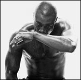

Yo !gars
Cardiovascular fitness is a health-related component of physical fitness that is brought about by sustained physical activity.Cardiovascular fitness is a health-related component of physical fitness that is brought about by sustained physical activity.A person's ability to deliver oxygen to the working muscles is affected brought about by sustained physical activity. A person's ability to deliver oxygen to the working muscles is affected by many physiological parameters, including heart rate, stroke volume, cardiacoutput, and maximal oxygen consumption
Musculation

Cardiovascular fitness is a health-related component of physical fitness that is brought about by sustained physical activity.
Cardio
Cardiovascular fitness is a health-related component of physical fitness that is brought about by sustained physical activity.
Mental
Cardiovascular fitness is a health-related component of physical fitness that is brought about by sustained physical activity.
Musculation
Cardiovascular fitness is a health-related component of physical fitness that is brought about by sustained physical activity.Cardiovascular fitness is a health-related component of physical fitness that is brought about by sustained physical activity.A person's ability to deliver oxygen to the working muscles is affected brought about by sustained physical activity. A person's ability to deliver oxygen to the working muscles is affected by many physiological parameters, including heart rate, stroke volume, cardiacoutput, and maximal oxygen consumption
cardio
Cardiovascular fitness is a health-related component of physical fitness that is brought about by sustained physical activity.Cardiovascular fitness is a health-related component of physical fitness that is brought about by sustained physical activity.A person's ability to deliver oxygen to the working muscles is affected brought about by sustained physical activity. A person's ability to deliver oxygen to the working muscles is affected by many physiological parameters, including heart rate, stroke volume, cardiacoutput, and maximal oxygen consumption
Sante mentaie
Cardiovascular fitness is a health-related component of physical fitness that is brought about by sustained physical activity.Cardiovascular fitness is a health-related component of physical fitness that is brought about by sustained physical activity.A person's ability to deliver oxygen to the working muscles is affected brought about by sustained physical activity. A person's ability to deliver oxygen to the working muscles is affected by many physiological parameters, including heart rate, stroke volume, cardiacoutput, and maximal oxygen consumption